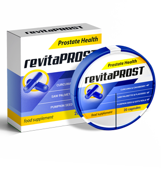

Jak vyléčit prostatitidu?
Denně do naší redakce přichází obrovské množství dopisů, ale jeden z nich přilákal naši zvláštní pozornost. Věříme, že to bude užitečné pro mužskou polovinu čtenářů našeho časopisu.

Chci se podělit o svůj příběh a možná pomoci dalším mužům trpícím prostatitidou, aby se znovu stali zdravými. Ze zřejmých důvodů si přeji zůstat inkognito.
Zaprvé, co je prostatitida? Jednoduše řečeno, jedná se o zánět prostaty. Tá, která produkuje tajemství, které umožňuje vašim spermiím cestovat do cíle a nezemřít v raných fázích již tak krátkého života. Je to také prostata, která blokuje močový kanál během pohlavního styku a zabraňuje vstupu spermií do močového měchýře a naopak. Existuje mnoho příčin prostatitidy, ale hlavními jsou sedavý životní styl a alkohol.
Můj příběh začal dlouho předtím, než jsem se dozvěděl, co je to prostatitida. Vždy se zdálo, že toto slovo pochází ze seznamu nemocí důchodců, a nemůže mít se mnou nic společného. Asi od 15 let jsem pravidelně začal pociťovat bolest. Ostrá bolest velmi podivné povahy. V té době jsem ani nedokázal vysvětlit, na jakém místě. Stávalo se to velmi zřídka a nepřikládal jsem tomu žádný význam. Nikdy nevíte, co to může být. Občas i vydržet 5-10 minut nebyl problém.
Uplynulo 10 let. Během této doby mě téměř nic neobtěžovalo. Taková bolest se projevovala jednou za 2-3 měsíce, někdy méně často. A z nějakého důvodu mi to uvízlo v hlavě, což je pravděpodobně případ každého. Je to jen taková věc, o které se nemluví. Nejbolestivější bylo, když se to projevilo po sexu. Není vhodný čas na to, aby se kroutil bolestí ve studeném potu.

A tak, když mi bylo 25, měl jsem bolest v slabinách. O týden později se zesílila natolik, že noha začala zevnitř znecitlivět ke kolenu. První věc, která mě napadla, byla kýla. Kromě toho jsem podstoupil 4 operace kýly, z nichž tři byly tříselné. Pocity byly velmi podobné a já jsem se začal mentálně připravovat na operaci. Na základě tohoto předpokladu jsem se objednal k chirurgovi, který vyšetřil třísla a vyvrátil moje domněnky a poslal mě k urologovi.
Vyšetření urologem bylo bolestivé. Doktor mě umístil do nepříliš příjemné polohy a strčil prst (a připadá mi to jako celá ruka) na místo nedotknutelné pro každého muže. A řeknu vám toto: pokud vám řeknou, abyste si v takové situaci odpočinuli, nemusíte se o to ani snažit. V této pozici jsem strávil asi minutu. Samozřejmě je těžké se v takové situaci soustředit, ale přesto jsem musel odpovědět, když bolest zesílí. A zesílilo se to v okamžiku přitlačení prostaty.
Po dokončení diagnostických vyšetření lékař mě pozval do ordinace a současně si dělal vtipy o podchlazení. Jakmile se však dobrý strýc posadil ke svému stolu, proměnil se v státního zástupce. Poslouchal jsem nejtvrdší a nejponiživější přednášku, že mám nemoc jako u 45-50letých. Nastala pauza. Ticho jsem přerušil otázkou CO DĚLAT?. Urolog sklonil hlavu a začal pomalu vysvětlovat, s čím jsem se setkal. Předepsal čípky, pilulky a testy.
Léčba pomohla. Mimochodem, na radu stejného lékaře začal jsem sportovat (říká se, že zabraňuje patologické stagnaci prostaty). A nějak jsem po bazénu ucítil známý pocit pálení. Šel jsem k jinému lékaři. Opět stejný příběh s analýzami a stejnými doporučeními. Na chvíli to pomohlo, ale problém se znovu vrátil.

Pokud tomu rozumím, je to pro urology běžná praxe - neléčit nemoc, ale dočasně zmírnit příznaky. Proto jsem se rozhodl jednat nezávisle. Hledal jsem na celém internetu a četl spoustu recenzí o různých lékařech. Na jednom z fór jsem narazil na příspěvky o profesorovi, který jednou provždy vyléčí prostatitidu. Je pravda, že jeho konzultace stojí dost peněz.
Ale co jiného? Objednal jsem se a čekal jsem frontu měsíc a půl. Přišel jsem k profesorovi s hromadou hotových analýz. Téměř bez toho, aby se na ně podíval, vytáhl z šuplíku balíček pilulek, podal mi ho a poslal na recepci, abych zaplatil za návštěvu.
Přípravek se jmenoval . Dobral jsem celou kúru, jak bylo potřeba. Efekt byl působivý: zmizela nejen bolest a celkové nepohodlí, ale se výrazně zlepšila potence a erekce se stala kvalitnější a delší.

Nejlepší část: je to už rok a půl, co jsem dokončil léčbu , a od té doby nedošlo k recidivě.
Nedávno jsem se rozhodl brát pro prevenci prostatitidy a pro zvýšení potence. Kouknul jsem na internetu, abych zjistil, zda je tento lék pro tyto účely vhodný. Jak se ukázalo, ano, to se hodí.
A objevil jsem další zajímavou věc: cena je ve skutečnosti několikanásobně nižší, než jsem za ni zaplatil na profesorské klinice. Přípravek lze objednat přímo od výrobce bez jakýchkoli dalších poplatků. A profesor se ukázal jako podvodník. Chci tedy sdílet odkaz, kde si můžete objednat za cenu výrobce: